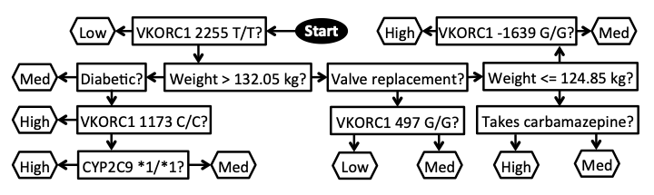
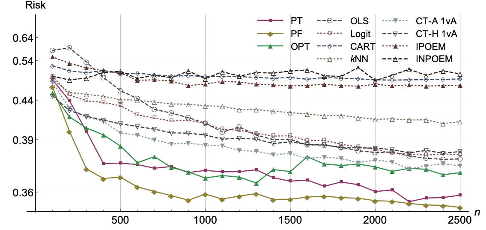
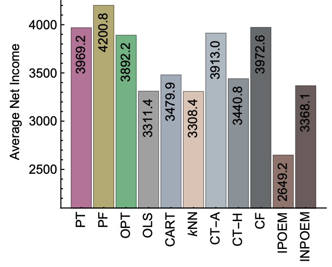

- n = 200 対 1,300Warfarin の投与量の実験で、論文の直接の方法（PT・PF・OPT）はリスク 0.4 未満に n = 200 で届いた。OLS とロジスティック回帰による R&C は n = 1,300 を要した（論文 4.1 節）。
- 深さ 2〜3 の木MIP で解く最適な個別化の木（OPT）は、n = 2,500 で深さ 9〜13 になる貪欲な木（PT）よりずっと単純な木で、まずまずの性能を出す。ただし計算に時間がかかる（論文 4.1 節）。
- \(\hat P_1=0.22\)Warfarin でのいちばん良いリスク 0.356 は、個別化しない場合から完全な個別化までの道のりの 22%、現在の処置（データの \(T\)）からだと 47% にあたる（論文 4.1 節）。
処置ごとに回帰して比べる標準的な方法は、データを処置の数に分け、必要以上のものを学ぶ
個人の共変量 \(x\in\mathbb{R}^d\) を見て、\(m\) 個の処置（薬や推薦する記事など）から1つを選ぶ規則 \(\tau\) を個別化モデルと呼ぶ。結果は小さいほど良いとし、全員が \(\tau\) に従ったときの結果の期待値 \(R(\tau)=\mathbb{E}[Y(\tau(X))]\) を個別化のリスクとする。学習に使えるのは観察データ \((X_i,T_i,Y_i)\) で、実際に受けた処置の結果しか見えない。処置を受けた群どうしは無作為化実験と違って系統的に異なる。
論文は無交絡の仮定（各 \(t\) で \(Y(t)\) が \(X\) のもとで \(T\) と独立で、どの処置も起こりうる）を置く。このとき条件付きの因果効果は \(Y\) を \(X,T\) に回帰したものに等しい。そこで標準的な方法は処置 \(t\) を受けた部分標本ごとに回帰モデル \(\hat\mu_t\) を当てはめ、予測が最小の処置を選ぶ。論文はこれを regress and compare（R&C）と呼ぶ。
回帰が各点で一致的なら R&C も一致的になる（定理 1）。しかし実際には個別化に向かないと論文は述べる。理由は 3 つある。必要以上のものを学ぼうとすること、学習データを \(m\) 個に分けてしまうこと、学習で個別化のリスクではなく予測の誤差を小さくしていることである。
個別化のリスクは、結果と傾向スコアで重みをつけた「受けた処置を当てる分類」の誤りとして書ける
一般化傾向スコアを \(\phi(t,x)=\Pr(T=t\mid X=x)\) とし、各人の値を \(Q=\phi(T,X)\) とする。無交絡のもとで、次の等式が成り立つ（定理 2）。
つまり、個別化モデルを「受けた処置 \(T\) を当てる分類器」とみて、当たった人の結果を \(Q\) で割って平均したものがリスクになる。\(Q\) が分かっていれば重みつきの分類の経験リスク最小化になり、ログつきバンディットのフィードバックから学ぶ方法（Beygelzimer & Langford、Swaminathan & Joachims）に近い。観察データでは \(Q\) を推定する必要があるが、その推定はモデルの指定に強く依存するか、ノンパラメトリックだと偏りやばらつきが大きく、不安定になると論文は述べる。また問題が傾向スコアの推定と重みつき分類の 2 つの課題に分かれてしまう。論文は傾向スコアを別に推定しない 1 つの課題として解く方法を次に示す。
葉の中で処置の割り当てが共変量と独立なら、葉ごとに最良の処置の平均結果がリスクの推定になり、傾向スコアが要らない
共変量の空間を互いに重ならない領域 \(\mathcal{X}_1,\dots,\mathcal{X}_L\) に分け、各領域の中では \(X\perp T\mid X\in\mathcal{X}_\ell\) が成り立つほど細かいとする。このとき領域の中では傾向スコアが定数になり、領域ごとの平均で作ったリスクの推定量 \(\hat R_n(\tau)\) が不偏かつ一致的になる（系 3）。この推定量を \(\tau\) について最小にすると、領域ごとに次の個別化の不純度を足したものになる。
\(\tilde S\) は領域に入った \(k\) 人のデータである。各処置について、その処置を受けた人の結果の平均をとり、いちばん小さい平均に \(k\) を掛ける。その領域ではその処置を処方する。分類の木でのエントロピーやジニ係数、回帰の木での二乗誤差の和にあたるものを、個別化のために作ったことになる。
領域の中での独立性は領域を細かくするほど成り立ちやすい。\(X\) そのもので条件づければ自明に成り立つが、有限の分割では厳密には満たせないかもしれないと論文は断っている。細かい分割は推定の偏りを減らし、粗い分割はばらつきを減らす。
個別化の不純度を、貪欲な木（PT）、木のバギング（PF）、MIP で大域的に最適化する木（OPT）の 3 通りで小さくする
個別化の木（PT）は CART と同じく、軸に平行な分割 \(x_\ell\le\theta\) を選んで再帰的にデータを分ける。各段階で、2 つの子の不純度の和が最小になる分割を選ぶ。各処置の人数が \(n_{\min\text{-leaf}}\) 以上という条件を守れる限り分割を続け、最大の深さは置かなくてもよい。分割の候補にする特徴量の数 \(\#\text{features}\) も指定できる。
個別化の森（PF）は非常に細かい PT をブートストラップ標本で多数作り、各木の処方の最頻値をとる。細かい木の偏りの小ささを保ちながら、ばらつきを減らすねらいである。候補の特徴量の数は通常 \(\sqrt d\) にする。
最適な個別化の木（OPT）は PT が貪欲に小さくしていた目的を、二分木で表せる分割全体にわたって最小にする。
\((*)\) は、領域が二分木の葉で定まるという制約である。Bertsimas & Dunn（2016）の最適な木（OCT）にならい、論文は固定した深さ \(\Delta\) の完全二分木について、この問題を MIP（4）に書く。各節点の分割は候補の集合 \(C_p\)（各特徴量のデータの中点から \(\#\text{cuts}\) 個を選ぶ）から1つを選び、その選択を \(\lceil\log_2|C_p|\rceil\) 個の二値変数で符号化する（Yıldız & Vielma）。データ点が葉に属するかを表す変数 \(w_{ip}\) は、制約が整数性をもつので二値にしなくてよい。葉ごとに処置を選ぶ二値変数と、選んだ処置の平均結果を表す連続変数を、big-M の制約でつなぐ。二値変数の数は \(|\mathcal{L}|\,m+\sum_p\log_2|C_p|\) である。Gurobi で解き、PT を初期解に使う。

論文は、VKORC1 と CYP2C9 の遺伝子型が投与量と強く関係することが知られており、PT はこの関係を学んで、遺伝子型の効果が分かりやすい投与の指針を与えると述べている。
観察データで処方を評価するため、部分マッチングと個別化係数を導入する
観察データでは、処方 \(\tau(X_i)\) が実際の処置 \(T_i\) と違う人の結果が分からない。定理 2 にもとづいて一致した人だけを \(Y_i/Q_i\) で数える方法もあるが、多くのデータを捨てるうえに傾向スコアの推定が要る。論文は評価にはより信頼できる推定が望ましいとして、部分マッチングを提案する。データの一部だけを取り出し、各人を、自分が受けなかった各処置を受けた人とマハラノビス距離で対応づけ、その人の結果を反事実の結果として補う。対応づけた人は学習に使わない。
貪欲な方法では無作為に選んだ人ごとに、他の処置で最も近い人を探す。マッチングが完全に一致するならリスクの推定は不偏になる（定理 5）。処置が 2 つなら、対応の距離の和が最小になる組を二部グラフのマッチングで効率よく求められる（最適な部分マッチング）。この方法で取り出したテスト集合は母集団全体に対して偏りうるが、テスト集合を条件とした推定は不偏で、手法の比較や選択にはたいてい十分だと論文は述べる。
結果を単位のない量で表すため、予測での決定係数 \(R^2\) にならった 2 つの個別化係数も定義する。
\(P_1\) は個別化しない場合（全員に同じ最良の処置）から完全な個別化までの何割を進んだかを、\(P_2\) はデータで実際に行われた処置（現在の標準）から何割を進んだかを表す。どちらも 1 以下である。
Warfarin の投与量の実験で、直接の方法は少ないデータで低いリスクに届き、R&C はずっと多くのデータを要した
国際 Warfarin 薬理遺伝学コンソーシアムが集めた 5,410 人のデータを使う。適正な安定用量を低（週 21 mg 以下）・中・高（週 49 mg 以上）の 3 群に分け、処方した用量が誤っていれば \(Y(t)=1\)、正しければ 0 とする。観察データを作るため、処置 \(T\) を BMI に依存する確率で割り当てた。各 \(n=100,200,\dots,2500\) で、学習用 \(n\) 人とテスト用 2,500 人を無作為に選ぶことを 100 回繰り返した。テスト集合ではすべての反事実が分かる。

論文は、R&C がデータを分けて必要以上のことを学ぶので、データの使い方が非効率だと述べる。OLS とロジスティック回帰の R&C はリスク 0.4 未満に届くまでに n = 1,300 を要した。直接の方法は n = 200 でそこに届き、n = 700 で 0.36 以下のほぼ最適なリスクになった。CART と kNN の R&C、および傾向スコアを補って使う IPOEM・INPOEM は収束が遅い。因果木（CT-A、CT-H）を一対他の比較に使う 1vA は、中くらいの n では競争力があるが、n = 2,500 でもほぼ最適なリスクには届かなかった。
直接の方法のなかでは、PF が小さい n でも大きい n でも全体として最もよく、PT は n ≥ 2,000 で PF に近い性能になった。小さい n では OPT が PT を上回り、n = 100 では PF も上回った。論文はこれを、少ないデータに合う最良の単純な木を OPT が見つけられるためとしている。一方、n が大きいと MIP が大きくなりすぎて、Gurobi は深さの浅い PT の初期解をほとんど改善できず、性能が下がった。論文は、OPT が最も向くのは小さいデータか、非常に単純で解釈しやすく、それでいてまずまず効率のよいモデルが欲しい場合だと結論している（n = 2,500 で PT の深さ 9〜13 に対して OPT は 2〜3）。
職業訓練の受講を勧めるかを決める実験では、PF の推奨で受講費を引いた平均の収入が最も高くなった
National Supported Work Demonstration（LaLonde 1986）の実験標本 465 人と PSID の対照 2,490 人を合わせた観察データ 2,935 人を使う。受講費を 2,000 ドルとし、受講した人（\(T_i=1\)）の結果は 1978 年の収入から 2,000 ドルを引いた額とした。最適な部分マッチングで 55 組（110 人）のテスト集合を取り出した。組の中では、1974 年と 1975 年の収入の平均絶対偏差（12 ドルと 17 ドル）を除いて、すべての共変量が一致している。残りの 2,825 人で各手法を学習した。この実験には因果フォレスト（CF）も加えた。

論文は、個別化を直接ねらう方法にはっきりした利点があり、処置が 2 つしかないこの例では CF と CT-A も競争力が高いと述べる。PF による平均の純収入 4,200.8 は \(\hat P_1=0.22\)、\(\hat P_2=0.28\) にあたる。個別化しない場合から完全な個別化までの 22%、現在の標準からだと 28% を進んだことになる。
処置の結果を目的にした単変量の木を、貪欲法と MIP の両方で学ぶ
- 木が出すもの：葉ごとに \(m\) 個の処置から1つを処方する（個別化の木）。予測値やクラスではない。
- 分岐の種類：単変量で軸に平行な分割 \(x_\ell\le\theta\)。OPT では候補のしきい値を、各特徴量のデータの中点から \(\#\text{cuts}\) 個に間引く（Warfarin では 10 個）。
- 目的関数：葉ごとの個別化の不純度 \(I_{\mathrm{pers}}\) の和。葉の中で最良の処置を受けた人の平均結果に葉の人数を掛けたもので、分類の誤りや二乗誤差ではない。各葉の各処置に \(n_{\min\text{-leaf}}\) 人以上という制約がつく。
- 解き方：PT は CART と同じ貪欲な再帰的分割、PF はそのバギング、OPT は固定した深さの完全二分木についての MIP（Gurobi、PT を初期解）。
- 最適性の保証：OPT の MIP は固定した深さ・候補のしきい値・葉の人数制約のもとでの大域的な最適を求める定式化である。実験は時間制限つき（Warfarin で 1 時間、職業訓練で 24 時間）で、n が大きいと PT の初期解をほとんど改善できなかったと報告されている。
- 因果の仮定：無交絡。葉の中で処置の割り当てが共変量と独立という条件（系 3）は、分割が細かいほど近似的に成り立つ。
- データ：Warfarin の投与量（5,410 人、処置を BMI に依存させて観察データを作った半人工の設定）、NSW の職業訓練と PSID の対照（2,935 人）。
- 比較相手：R&C（OLS、ロジスティック回帰、CART、kNN）、因果木（CT-A、CT-H）の 1vA、IPOEM・INPOEM、因果フォレスト（職業訓練のみ）。
リストの中では、Bertsimas ら（2019）の Optimal Prescriptive Trees がこの論文を観察データから個別化の木を学ぶ先行研究に挙げて比較し、フローにもとづく処方的な木もこの論文の木をベースラインにしている。略称の衝突に注意が要る。この論文の OPT は「最適な個別化の木」で、Bertsimas らの OPT（Optimal Prescriptive Trees）とは別物である（解説者の注）。
（解説者の注）\(I_{\mathrm{pers}}\) は、葉の中の処置ごとの平均結果をそのまま比べるので、葉を層とみた層別の推定にあたる。傾向スコアを推定しない代わりに、葉の中で処置の割り当てが偏っていないことを分割の細かさに頼っている。
このページの数値・定理番号・式は PMLR の出版版（Proceedings of the 34th ICML, PMLR 70, pp. 1789–1798）による。arXiv 1608.08925 v3（2017 年 8 月 1 日）は出版版の PDF に補足資料を付けたもので、本文の数値は出版版と一致することを確かめた。書誌は PMLR のページで確認した（DOI はない）。図は出版版の PDF から切り出した。
@InProceedings{pmlr-v70-kallus17a,
title = {Recursive Partitioning for Personalization using Observational Data},
author = {Kallus, Nathan},
booktitle = {Proceedings of the 34th International Conference on Machine Learning},
pages = {1789--1798},
year = {2017},
editor = {Precup, Doina and Teh, Yee Whye},
volume = {70},
series = {Proceedings of Machine Learning Research},
publisher = {PMLR},
url = {https://proceedings.mlr.press/v70/kallus17a.html}
}